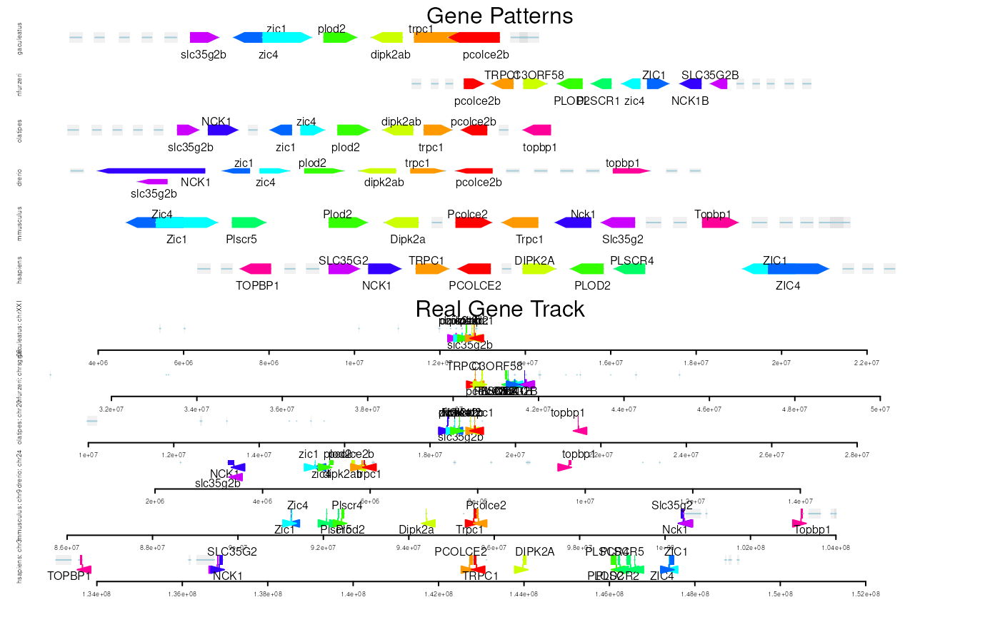
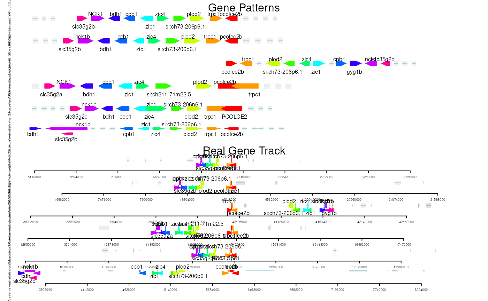

vignettes/vignette.Rmd
vignette.RmdAbstract
Visualize conserved gene clusters in multiple genomes
Understanding the conservation of gene neighborhoods across species provides important insights into genome organization, functional linkage, and evolutionary processes. geneClusterPattern is a package developed to facilitate the systematic characterization of orthologous gene arrangements surrounding a focal gene across multiple species.
Given a gene of interest, the package supports two complementary strategies to define orthology relationships. It can retrieve homologous genes directly from Ensembl (via Compara), or it can incorporate user-provided ortholog group assignments generated by OrthoFinder. These flexible input options allow users to integrate gene homology information from widely used comparative genomics pipelines.
Based on the orthology information, geneClusterPattern constructs an ordered representation of genes within a configurable genomic window upstream and downstream of the focal gene. The resulting ortholog gene pattern captures the relative arrangement of ortholog groups across species, enabling direct comparison of local genomic structure.
This framework is particularly useful for investigating conserved synteny, identifying lineage-specific rearrangements, and exploring the evolutionary stability of gene clusters. The package outputs are designed to be analysis- and visualization-friendly, supporting downstream statistical analysis and graphical representation of gene neighborhood conservation.
if (!require("BiocManager", quietly = TRUE)) {
install.packages("BiocManager")
}
# BiocManager::install('geneClusterPattern')
# or install from github
BiocManager::install('jianhong/geneClusterPattern')There are main steps to create the gene cluster pattern for a given gene.
Step 1. Load the required libraries.
Step 2. Prepare homolog information for the reference species. Homologs can be retrieved from the Ensembl database or obtained from ortholog group assignments. In this example, we use a pre-saved homolog dataset downloaded from Ensembl.
Step 3. Define the gene cluster.
Step 4. Visualize the gene cluster.
## load library
library(geneClusterPattern)
library(org.Dr.eg.db)
library(GenomeInfoDb)
## prepare all the ensembl ids
ids <- as.list(org.Dr.egENSEMBL)
ensembl_gene_ids <- sort(unique(unlist(ids)))
## extract gene information via biomaRt
fish_mart <- guessSpecies('zebrafish', output='mart', version=112)
fish <- grangesFromEnsemblIDs(mart = fish_mart,
ensembl_gene_ids = ensembl_gene_ids)
## if failed, try load presaved data
# fish <- readRDS(system.file('extdata', 'fish.rds',
# package = 'geneClusterPattern'))
## subset the ensembl_gene_ids to save time
ensembl_gene_ids <- names(fish[seqnames(fish)=='24'])
## keep the standard sequence only
fish <- pruningSequences(fish)
## define the species scientific name
species <- guessSpecies(c('human', 'house mouse', 'Japanese medaka', 'turquoise killifish', 'gaculeatus'), version=112) # three-spined stickleback
species## [1] "hsapiens" "mmusculus" "olatipes" "nfurzeri" "gaculeatus"
## retrieve homologs from Ensembl
homologs <- getHomologGeneList(species, fish_mart, ensembl_gene_ids)
homologs <- pruningSequences(homologs)
## if failed, try to load pre-saved data
# homologs <- readRDS(system.file('extdata', 'homologs.rds',
# package = 'geneClusterPattern'))
## get gene cluster for target gene
queryGene <- 'pcolce2b'
## define the gene cluster
nearest10neighbors <- getGeneCluster(fish, queryGene, homologs, k=10)
## prepare the gene annotations for all homologs for plot
genesList <- c(drerio=fish, homologs)[
c("hsapiens", "mmusculus", "drerio", "olatipes", "nfurzeri", "gaculeatus")]
## plot the cluster
pgp <- plotGeneClusterPatterns(genesList, nearest10neighbors)
The plot consists of two panels. The top panel shows the Gene Pattern plot, while the bottom panel displays the actual genomic coordinates of the genes in the cluster for each species. By default, the reference gene is positioned at the center of the plot. Homologous genes across different species are displayed using the same fill color.
In the Gene Pattern plot, gene lengths are shown schematically rather than to scale, making the gene order and orientation easier to visualize. In contrast, the genomic tracks in the bottom panel represent the true genomic coordinates and actual gene lengths.
Homolog information can also be obtained from ortholog group assignments. For example, you can start from the orthogroup table generated by OrthoFinder, which groups homologous genes across multiple species into orthologous groups. These group assignments can be used directly as input for downstream gene cluster analysis.
## import the ortholog groups
path <- system.file('extdata/orthofinder/Danio_rerio.GRCz11.pep.all.tsv.gz',
package='geneClusterPattern')
orthologs <- orthologPairsFromOrthoFinder(path)
## annotations
annoGR_list <- readRDS(
system.file('extdata/orthofinder/grange.obj.rds',
package='geneClusterPattern'))
## reformat to meet the requirement of the package
homologs <- getHomologListForOrthoFinder(orthologs, annoGR_list[-1])
## set reference species
queryGR <- annoGR_list[["Danio rerio"]]
## define the gene cluster
nearest10neighbors <- getGeneCluster(queryGR, queryGene, homologs, k=10)
pgp <- plotGeneClusterPatterns(c('zebrafish'=queryGR, homologs),
nearest10neighbors)
R version 4.6.0 (2026-04-24) Platform: x86_64-pc-linux-gnu Running under: Ubuntu 24.04.4 LTS
Matrix products: default BLAS: /usr/lib/x86_64-linux-gnu/openblas-pthread/libblas.so.3 LAPACK: /usr/lib/x86_64-linux-gnu/openblas-pthread/libopenblasp-r0.3.26.so; LAPACK version 3.12.0
locale: [1] LC_CTYPE=en_US.UTF-8 LC_NUMERIC=C
[3] LC_TIME=en_US.UTF-8 LC_COLLATE=en_US.UTF-8
[5] LC_MONETARY=en_US.UTF-8 LC_MESSAGES=en_US.UTF-8
[7] LC_PAPER=en_US.UTF-8 LC_NAME=C
[9] LC_ADDRESS=C LC_TELEPHONE=C
[11] LC_MEASUREMENT=en_US.UTF-8 LC_IDENTIFICATION=C
time zone: Etc/UTC tzcode source: system (glibc)
attached base packages: [1] stats4 stats graphics grDevices utils
datasets methods
[8] base
other attached packages: [1] GenomeInfoDb_1.49.1 Seqinfo_1.3.0
geneClusterPattern_0.1.4 [4] org.Dr.eg.db_3.22.0 AnnotationDbi_1.75.0
IRanges_2.47.2
[7] S4Vectors_0.51.3 Biobase_2.73.1 BiocGenerics_0.59.7
[10] generics_0.1.4
loaded via a namespace (and not attached): [1] strawr_0.0.92
RColorBrewer_1.1-3
[3] rstudioapi_0.19.0 jsonlite_2.0.0
[5] magrittr_2.0.5 GenomicFeatures_1.65.0
[7] farver_2.1.2 rmarkdown_2.31
[9] fs_2.1.0 BiocIO_1.23.3
[11] ragg_1.5.2 vctrs_0.7.3
[13] memoise_2.0.1 Rsamtools_2.29.0
[15] RCurl_1.98-1.19 base64enc_0.1-6
[17] htmltools_0.5.9 S4Arrays_1.13.0
[19] BiocBaseUtils_1.15.1 progress_1.2.3
[21] curl_7.1.0 Rhdf5lib_2.1.0
[23] rhdf5_2.57.1 SparseArray_1.13.2
[25] Formula_1.2-5 sass_0.4.10
[27] bslib_0.11.0 htmlwidgets_1.6.4
[29] desc_1.4.3 Gviz_1.57.0
[31] httr2_1.2.2 cachem_1.1.0
[33] GenomicAlignments_1.49.0 lifecycle_1.0.5
[35] pkgconfig_2.0.3 Matrix_1.7-5
[37] R6_2.6.1 fastmap_1.2.0
[39] MatrixGenerics_1.25.0 digest_0.6.39
[41] colorspace_2.1-2 textshaping_1.0.5
[43] Hmisc_5.2-6 GenomicRanges_1.65.0
[45] RSQLite_3.53.2 filelock_1.0.3
[47] httr_1.4.8 abind_1.4-8
[49] compiler_4.6.0 bit64_4.8.2
[51] htmlTable_2.5.0 S7_0.2.2
[53] backports_1.5.1 BiocParallel_1.47.0
[55] DBI_1.3.0 biomaRt_2.69.0
[57] rappdirs_0.3.4 DelayedArray_0.39.3
[59] rjson_0.2.23 tools_4.6.0
[61] foreign_0.8-91 otel_0.2.0
[63] nnet_7.3-20 glue_1.8.1
[65] InteractionSet_1.41.0 restfulr_0.0.17
[67] rhdf5filters_1.25.0 grid_4.6.0
[69] checkmate_2.3.4 cluster_2.1.8.2
[71] gtable_0.3.6 BSgenome_1.81.0
[73] trackViewer_1.49.0 ensembldb_2.37.3
[75] data.table_1.18.4 hms_1.1.4
[77] XVector_0.53.0 RANN_2.6.2
[79] pillar_1.11.1 stringr_1.6.0
[81] dplyr_1.2.1 BiocFileCache_3.3.0
[83] lattice_0.22-9 deldir_2.0-4
[85] rtracklayer_1.73.0 bit_4.6.0
[87] biovizBase_1.61.0 tidyselect_1.2.1
[89] Biostrings_2.81.3 knitr_1.51
[91] gridExtra_2.3 ProtGenerics_1.45.0
[93] SummarizedExperiment_1.43.0 xfun_0.59
[95] matrixStats_1.5.0 stringi_1.8.7
[97] UCSC.utils_1.9.0 lazyeval_0.2.3
[99] yaml_2.3.12 evaluate_1.0.5
[101] codetools_0.2-20 cigarillo_1.3.0
[103] interp_1.1-6 tibble_3.3.1
[105] BiocManager_1.30.27 cli_3.6.6
[107] rpart_4.1.27 systemfonts_1.3.2
[109] jquerylib_0.1.4 Rcpp_1.1.1-1.1
[111] dichromat_2.0-0.1 grImport_0.9-7
[113] dbplyr_2.6.0 png_0.1-9
[115] XML_3.99-0.23 parallel_4.6.0
[117] pkgdown_2.2.0 ggplot2_4.0.3
[119] blob_1.3.0 prettyunits_1.2.0
[121] jpeg_0.1-11 latticeExtra_0.6-31
[123] AnnotationFilter_1.37.0 bitops_1.0-9
[125] txdbmaker_1.9.0 pwalign_1.9.1
[127] VariantAnnotation_1.59.0 scales_1.4.0
[129] crayon_1.5.3 BiocStyle_2.41.0
[131] rlang_1.2.0 KEGGREST_1.53.1